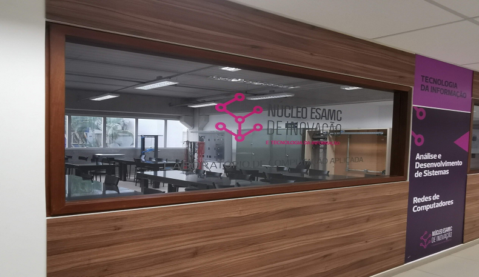

Sobre o Núcleo Esamc de Inovação
e tecnologia da informação

A ESAMC é um centro de excelência em educação nas áreas de Negócios, Comunicação, Engenharia e Direito. O grande diferencial dos nossos alunos é a sua visão completa do mercado, adquirida através do nosso modelo pedagógico, corpo docente, parcerias internacionais e desenvolvimento das competências.
Nós formamos profissionais para atuar em um mercado altamente competitivo; e, em empresas que buscam atingir suas metas através do sucesso neste mercado. A ESAMC está entre as 50 melhores Instituições de Ensino Superior do Brasil, o que reflete a consolidação de nossa imagem acadêmica.
Por trás do nosso sucesso, nos sustentando, estão, sem dúvida alguma, os nossos valores éticos, a inovação e a excelência acadêmica implantada em nossos cursos. Além disso, a nossa política de investir no desenvolvimento e no aprimoramento dos nossos professores, programas, métodos educacionais e instalações sustenta a nossa constante busca pela excelência.
O corpo docente da ESAMC está entre os melhores e mais experientes do país. Contamos com profissionais que buscam o aperfeiçoamento constante; e, atuantes no mercado, para que possam estar frente à s necessidades dos nossos alunos e dos mercados, local e global. A ESAMC também tem por meta continuar a inovar, desenvolver e aprimorar seus programas com a frequência necessária, de modo a melhor preparar seus alunos para vencer os desafios de um ambiente competitivo, global e extremamente dinâmico.
Luiz Gracioso, Presidente.

Nossos cursos
Contato
Copyright © 2020 Núcleo TI ESAMC